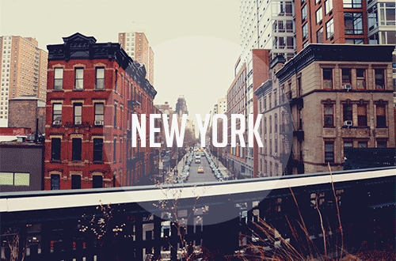
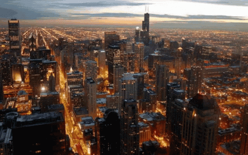

New York

Geographical Location: North America
New York, often called New York City or NYC, is the most populous city in the United States. With a 2020 population of 8,804,190 distributed over 300.46 square miles (778.2 km2), the city is the most densely populated major city in the United States. NYC is more than twice as populous as Los Angeles, the nation's second-largest city. New York City is at the southern tip of New York State and is situated on one of the world's largest natural harbors. The city comprises five boroughs, each of which is coextensive with a respective county. The five boroughs, which were created in 1898 when local governments were consolidated into a single municipality, are: Brooklyn (Kings County), Queens (Queens County), Manhattan (New York County), the Bronx (Bronx County), and Staten Island (Richmond County). New York City is a global city and a cultural, financial, high-tech, entertainment, glamour, and media center with a significant influence on commerce, health care and scientific output in life sciences, research, technology, education, politics, tourism, dining, art, fashion, and sports. Home to the headquarters of the United Nations, New York is an important center for international diplomacy, and it is sometimes described as the world's most important city and the capital of the world.
Photo Gallery


.jpg)
Los Angeles


Geographical Location: North America
Los Angeles, often referred to by its initials L.A., officially the City of Los Angeles, is the most populous city in the U.S. state of California. With roughly 3.9 million residents within the city limits as of 2020, Los Angeles is the second-most populous city in the United States, behind only New York City; it is the commercial, financial and cultural center of the Southern California region. Los Angeles has a Mediterranean climate, an ethnically and culturally diverse population, in addition to a sprawling metropolitan area.
The majority of the city proper lies in a basin in Southern California adjacent to the Pacific Ocean in the west and extending partly through the Santa Monica Mountains and north into the San Fernando Valley, with the city bordering the San Gabriel Valley to its east. It covers about 469 square miles (1,210 km2), and is the county seat of Los Angeles County, which is the most populous county in the United States with an estimated 9.86 million residents as of 2022. It is the third-most visited city in the U.S. with over 4.6 million visitors as of 2019.
Photo Gallery

.jpg)
.jpg)
Chicago

Geographical Location: North America
Chicago is the most populous city in the U.S. state of Illinois and the third-most populous in the United States after New York City and Los Angeles. With a population of 2,746,388 in the 2020 census, it is also the most populous city in the Midwest. As the seat of Cook County, the second-most populous county in the U.S., Chicago is the center of the Chicago metropolitan area.
Located on the shore of Lake Michigan, Chicago was incorporated as a city in 1837 near a portage between the Great Lakes and the Mississippi River watershed. It grew rapidly in the mid-19th century. In 1871, the Great Chicago Fire destroyed several square miles and left more than 100,000 homeless, but Chicago's population continued to grow. Chicago made noted contributions to urban planning and architecture, such as the Chicago School, the development of the City Beautiful Movement, and the steel-framed skyscraper.
Photo Gallery
.jpg)


Las Vegas

Geographical Location: North America
Las Vegas, often known simply as Vegas, is the 25th-most populous city in the United States, the most populous city in the state of Nevada, and the county seat of Clark County. The Las Vegas Valley metropolitan area is the largest within the greater Mojave Desert, and 2nd-largest in the Southwestern United States. Las Vegas is an internationally renowned major resort city, known primarily for its gambling, shopping, fine dining, entertainment, and nightlife. The Las Vegas Valley as a whole serves as the leading financial, commercial, and cultural center for Nevada.
The city bills itself as the Entertainment Capital of the World, and is famous for its luxurious and extremely large casino-hotels. With over 2.9 million visitors as of 2019, Las Vegas is the sixth-most visited city in the U.S., after New York City, Miami, Los Angeles, Orlando, and San Francisco. It is a top-three destination in the U.S. for business conventions and a global leader in the hospitality industry, claiming more AAA Five Diamond hotels than any other city in the world. Las Vegas annually ranks as one of the world's most visited tourist destinations. The city's tolerance for numerous forms of adult entertainment earned it the nickname "Sin City", and has made Las Vegas a popular setting for literature, films, television programs, and music videos.
Photo Gallery
,_The_Strip_--_2012_--_6232.jpg)


Liverpool, UK
Geographical Location: The United Kingdom
Liverpool is a city and metropolitan borough in Merseyside, North West England, with a population of 500,500 in 2022. The city is part of a broader metropolitan area that is the fifth largest in the United Kingdom, with a population of 2.24 million. A historic port city, Liverpool lies on the eastern side of the Mersey Estuary adjacent to the Irish Sea. The city was an important part of the Industrial Revolution in Great Britain and a vital hub for trade. The city celebrated its 800th anniversary in 2007 and was named the 2008 European Capital of Culture. Its selection was credited with kickstarting an economic renaissance in the region
Photo Gallery

.jpg)
Yellowstone


Geographical Location: North America
Yellowstone is the first national park in the United States. It covers over 2.2 million acres, and provides an opportunity to see wildlife and explore geothermal areas. In fact, Yellowstone contains about half the world's active geysers.
These unique opportunities also bring out a lot of bad decisions among the tourists. Every year visitors injure themselves or the wildlife by getting close to the animals. You can see examples of people making bad decisions by visiting Yellowstone National Park: Invasion of the Idiots, Tourons of Yellowstone, or Cowboy State Daily.
Photo Gallery